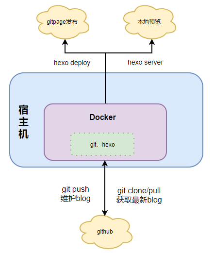
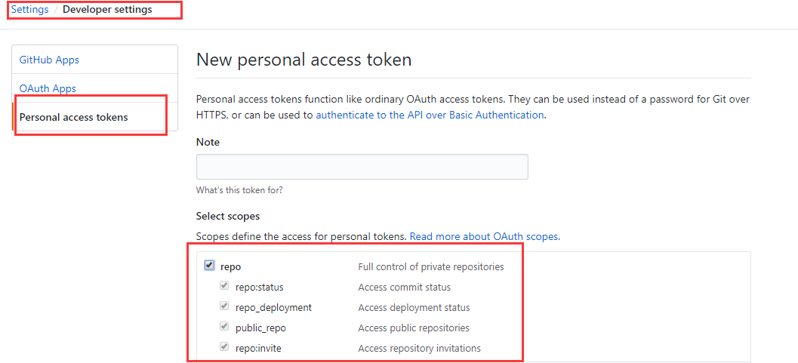

前置准备：
- 一个git账号
- docker基础知识
- 一台Linux云服务器（其实本地windows也行，只不过较为麻烦，第二节有提到windows如何搭建docker的文章）
0x01_搭建hexo初始模板
- 首先创建一个hexo项目。
1
2
3
4
5
6
7
8
9
10# 以epel方式安装nodejs
yum install -y epel-release && yum install -y nodejs
# 安装hexo
npm install hexo-cli -g
# hexo初始化模板，目录为blog
hexo init blog
cd blog
npm install
# 默认4000端口
hexo server
如上，访问 http://ip:4000 查看效果。
- 将hexo项目上传至自己的github。
0x02_搭建docker环境（Linux环境）
宿主机安装docker
1
2
3# linux安装docker
sudo yum update -y
sudo yum install -y docker编辑
/etc/docker/daemon.json文件，加入以下内容1
2
3{
"hosts": [ "unix:///var/run/docker.sock","tcp://0.0.0.0:2376"]
}添加DOCKER_HOST
1
sudo echo "export DOCKER_HOST=tcp://0.0.0.0:2376" >> ~/.bashrc && source ~/.bashrc
将当前用户添加进docker用户组，之后需要登出session再重新登录
1
2# Allow your user to access the Docker CLI without needing root access.
sudo usermod -aG docker $USER启动docker
1
2sudo systemctl enable docker
sudo systemctl start docker验证docker是否安装成功，如界面出现hello-world则代表安装成功。
1
sudo docker run hello-world
关于windows环境如何搭建docker，可以参考此篇文章末尾。
0x03_基于Dockerfile构建可持续发布的blog镜像
新建一个目录，建立文件名为Dockerfile，构建image。其中git config --global url."https://{token}:@github.com/".insteadOf "https://github.com/"中的{token}在github中配置。
GitHub access token：Your Profile → Settings → Personal Access Tokens → Generate New Token，勾选repo并生成即可获得对应token，如图：

1 | FROM centos |
在目录下执行docker build --no-cache -t imageName .即可构建image。
0x04_预览及发布
基于以上步骤构建的image，可通过下列命令启动一个container
1 | docker run -itd -p 4000:4000 imageName |
在启动后即可通过访问 http://ip:4000 查看效果，至于发布到gitpage的话，可以参考官方教程，这里简单描述下。
- 在你的github上创建一个仓库，名为
username.github.io,切记username要替换为你的github名字。 - 连接上你的container 。
1 | docker exec -it containerId bash |
- 在hexo项目所在目录下编辑 _config.yml，添加git关联
1 | # Deployment |
- 接着执行下列命令，执行清理，生成文件，发布，即可自动部署到gitpage。访问 https://username.github.io/ 即可查看效果。
1 | hexo clean |
0x05 结尾
鉴于本人对前端一窍不通，花了好几天才做出这个blog，主题是套用blinkfox大佬的hexo-theme-matery，然后加上自己的一些小修改，在此表示非常感谢所有为开源做出一份贡献的人们。